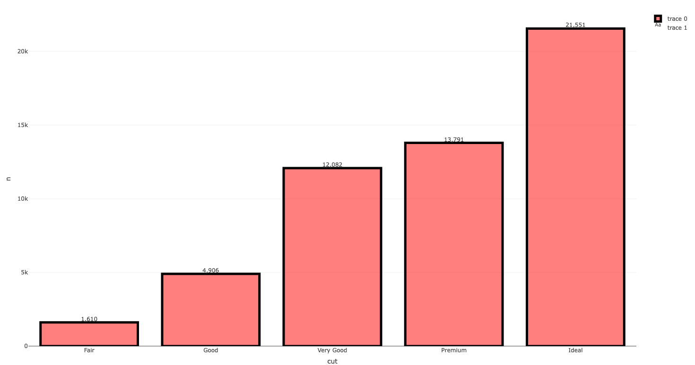
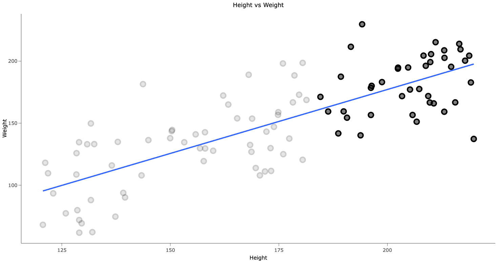
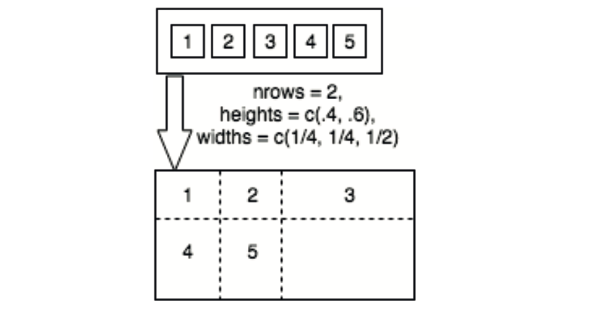
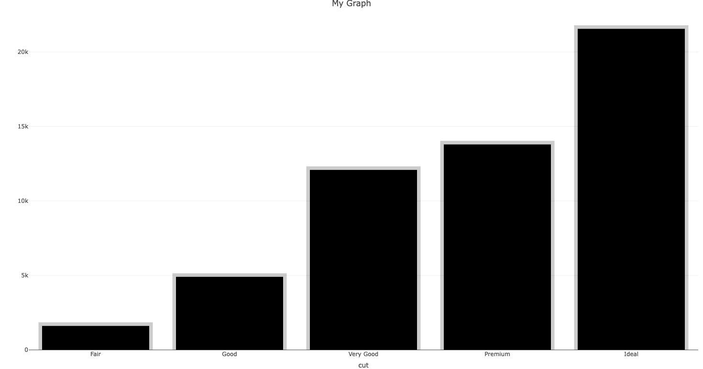
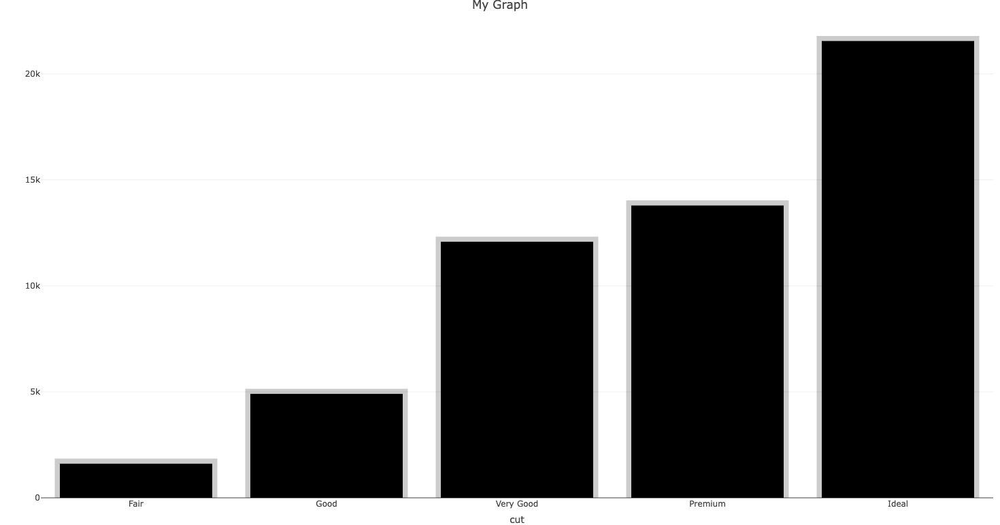

Introduction to IDV (Interactive Data-Vizualization)
Advantages
Description
Enhanced Exploration
Allows direct interaction, zooming, filtering, and dynamic parameter changes.
Deeper Understanding
Provides context, tooltips, and additional information on demand.
Iterative Analysis
Supports quick iteration through different views, accelerating the EDA process.
Communication & Collaboration
Engages stakeholders, facilitates clearer explanations, and fosters better discussions.
Complex Data Representation
Helps in visualizing multidimensional data in a more understandable manner.
User-Centric Exploration
Puts users in control, allowing personalized insights and exploration.
While R and packages like tidyverse provide powerful tools for data manipulation, visualization, and modeling, interactive data visualization adds another layer of exploration and understanding. I've highlighted several advantages in the context of exploratory data analysis (EDA) and data science workflows above.
Historically when researchers attempt to convey their findings, they often opt to use a different tools or programming languages like JavaScript to create interactive web visuals, showcasing their key discoveries. However, this shift demands a significant change in context, necessitating an entirely different skill set, which often hinders efficiency. Not only does one have to learn a completely different programming language, the learning curve for certain interactive visualization libraries is another challege. While modern interactive tools such as Tableu offer interactivity and offer nice properties, they often do not gel with a coding workflow since such GUI based systems tend to be rather "closed off" that means they don’t allow themselves to be easily customized, extended, or integrated with another system.
Grammar of Graphics and GGplot
I previously covered the grammar of graphics and GGplot in full detail, additionally, there are several resources available for a gentle introduction to the GGplot framework. Throughout this document, I will be implementing interactivity within the GGplot framework.
Step 3: Simulate non-linear relationship between height and weight.
Step 4: Rescale the data to make it more realistic.
Highlighting Observations
Highlighting observations is a simple way to add interactivity to a plot. In the example below, I've highlighted a certain segment of observations in the dataset.
Above we can see a simple example of how a lasso or selection tool can be used within an interactive framework to highlight certain observations of interest and save them as an image. Allowing users such interactivity, however simplified, such as in this case, adds a new dimension to visualization.
When a key insight surfaces, the HTML-generated figures can be easily shared via email or embedded in reports/websites. These interactive visuals, using htmlwidgets, seamlessly work in RMarkdown, Shiny apps, RStudio, Jupyter, etc. Sharing fosters discussions, allowing colleagues to offer fresh perspectives and even glean immediate insights from the graphics.
Annotating Points
Another way to add interactivity is to annotate points of interest. In the example below, I've annotated the points of interest with their respective domain. Here the use of the ggforce package is demonstrated to annotate certain points into a hull.
Plotly is a library for data visualization, which offers an array of interactive plots like scatter plots, line charts, and 3D visuals. It stands out for its interactivity, allowing users to explore data within the plots themselves by zooming, hovering for details, and toggling data visibility. Compatible with Jupyter, Dash, Shiny, JS and integration with Pandas and NumPy, Plotly is a versatile tool for creating dynamic and engaging visualizations.
Create a Plotly Visualization: Generate an interactive plot using Plotly in Python or R.
Export the Plot as HTML: Save the interactive Plotly visualization as an HTML file using the appropriate functions in Python (plotly.offline.plot) or R (htmlwidgets package).
Include HTML File in Website: Embed the saved HTML file into your website using an HTML iframe tag or directly insert the HTML code to display the Plotly visualization.
Generate Plotly Plot in Shiny: Use the plotly package within Shiny to create interactive plots.
Render the Plotly Output: Utilize renderPlotly() in the server function to generate the Plotly plot.
Display the Plotly Output: Use plotlyOutput() in the UI function to showcase the rendered Plotly plot within the Shiny app.
Create Plotly Visualizations: Use the plotly package in RMarkdown to generate interactive plots.
Render Plotly in Markdown: Employ the plotly::plotlyOutput() function in the R code chunk to render the Plotly plot.
Display in HTML Output: Knit the RMarkdown document to HTML, which embeds the interactive Plotly plots in the final HTML output.
Generate Plotly Visualizations:Use Plotly in Python or R within Jupyter to create interactive plots.
Display in Jupyter Notebook: For Python, use plotly's iplot() or plot() functions. For R, utilize plotly's functions or the htmlwidgets package with R code.
Render and View: Execute the code cells in the Jupyter notebook to view the Plotly plots displayed inline in the notebook.
There are two main ways to create a Plotly object:
Transforming a ggplot2 object into a Plotly object using ggplotly()
Directly initializing a Plotly object with plot_ly(), plot_geo(), or plot_mapbox().
Both approaches have somewhat complementary strengths and weaknesses, so it can be beneficial to learn both methods.
Plotly (plot_ly)
The Plotly package in R creates plots in R using the underlying library in JavaScript (plotly.js). The plot_ly() function has a direct connection to plotly.js, providing extra simplifications that enhance the plotting procedure. These simplifications, inspired by the Grammar of Graphics and ggplot2, notably expedite the shift between various visuals, making it easier to uncover valuable data insights.
The above code demonstrates creating bar graphs using plot_ly() with various configurations such as different colors, stroke settings, spans, and layout adjustments.
Plotly adopts a functional approach akin to the layered grammar of graphics. Here, most functions expect a plotly object as input and yield a modified version of it. These modifications solely depend on the function's input values, unlike base R graphics that often involve side effects. For instance, the layout() function alters layout components like the title within a plotly object.
Complex plot modifications in plotly can be challenging to navigate. The %>% operator from magrittr offers a left-to-right reading sequence, placing the object on the left into the first argument of the function on the right. This approach simplifies the understanding of layered modifications (Wickham, 2014).
The above code demonstrates how to put things together in plotly. The code is self-explanatory, however, in this example, we add multiple layers to a plotly graph, a text layer in addition to an histogram. The viewers have the option to turn off certain layers in the interactive component. Additionally, we combine the layers using magrittr piping.

Plotly Layers
Plotly layers are the building blocks of a plotly object. The add_*() functions, such as add_histogram(), add_lines(), add_markers(), etc., define how data is rendered into geometric objects, following the layered grammar of graphics. A layer, in this context, comprises five components: data, aesthetic mappings (e.g., color), geometric representation (e.g., rectangles), statistical transformations (e.g., sum), and positional adjustments (e.g., dodge).
In addition to layout(), there are add_*() functions (e.g., add_histogram(), add_lines(), etc.) defining how data is rendered into geometric objects, following the layered grammar of graphics.
A layer, in this context, comprises five components: data, aesthetic mappings (e.g., color), geometric representation (e.g., rectangles), statistical transformations (e.g., sum), and positional adjustments (e.g., dodge).
plot_ly() automatically adds a layer; explicitly adding layers, like add_histogram(), clarifies the plot's elements (e.g., plot_ly(diamonds, x = ~cut) requires add_histogram()).
plotly offers add_*() functions like add_histogram() and add_bars(), where add_histogram() computes statistics dynamically, while add_bars() needs pre-specified bar heights.
There are several other add_*() functions, with some performing statistical calculations in the browser (e.g., add_histogram2d(), add_contour(), add_boxplot()), while others focus more on graphics than statistics.
Non-statistical layers generally offer faster runtime due to reduced computational load, while statistical layers provide more client-side interactivity options.
Optimizing performance often involves rendering large sets of graphical elements, where Canvas via toWebGL() might be preferable over SVG (default).
Combining multiple graphical layers into one plot is common, and understanding plot_ly() becomes crucial for this purpose.
Plotly layout is a collection of attributes that define the plot's appearance, such as the title, axis labels, and background color. The layout() function modifies the layout components of a plotly object. The layout() function is a wrapper for the layout attributes, which are defined in the plotly.js schema.
GGPlotly
The ggplotly() function in plotly translates ggplot2 visuals into interactive plotly ones, simplifying the addition of interactivity to ggplot2 workflows. This function leverages ggplot2's intuitive interface for effortless exploration of statistical summaries across different groups using various geoms.
It efficiently handles facets, relative frequency displays, and seamlessly supports extensions like ggforce, naniar, and GGally, enhancing the visualization capabilities. It showcases different ways to visualize data, leveraging geom_sina(), stat_summary(), and ggplot2's strengths, facilitating in-depth analysis and model diagnostics. ggplotly() empowers the visualization toolkit by enabling interactive features like hover, zoom, and filtering, enhancing exploratory analysis, and allowing linking multiple views. Despite not always yielding perfect conversions, modifying ggplotly()'s return values or customizing tooltips can enhance interactivity, covered in later chapters for advanced modifications.
Plot <- |GGplot Object|
ggplotly(Plot)
# Example
ggplotly(ggplot(diamonds, aes(x = carat, y = price, color = cut)) + geom_point())
Traces
In Plotly, a "trace" refers to a visual representation of data on a plot. Each trace represents a specific set of data points and contains information about how that data should be displayed. Traces can include scatter plots, lines, bars, histograms, heatmaps, and more.
Key Points
Description
Type of Data
Traces encapsulate specific types of data visualizations, such as scatter points, lines, bars, or other chart elements.
Attributes
Each trace has its own set of attributes defining appearance and behavior, including settings for markers, lines, colors, labels, etc.
Multiple Traces
Allows having multiple traces on a single plot, facilitating visualization and comparison of different datasets or aspects of the same dataset.
Plot Composition
Traces are combined to create a complete plot. Each trace is added to the plot layout and configured individually, collectively representing the entire dataset or multiple datasets.
plot_ly() %>%
add_trace(
type = "scatter",
mode = "markers+lines",
x = 4:6,
y = 4:6
) \br
plot_ly() %>%
add_trace(
type = "scatter",
mode = "markers",
x = 4:6,
y = 4:6
) %>%
add_trace(type = "scatter",
mode = "lines",
x = 4:6,
y = 4:6)
The first block of code adds a single trace to the plot. It creates a scatter plot where markers and lines are both visible (mode = "markers+lines"), and it uses the values 4, 5, and 6 for both x and y axes. In the second block, we employ the two traces separately, allowing users to interactively manipulate each individual trace.
ToolTip
Layout
Chart Types
Plotly R Library Basic Charts
Plotly's R graphing library makes interactive, publication-quality graphs online. Examples of how to make basic charts.
Scatter and Line Plots Visualize relationships between numeric variables
Bar Charts Compare data across different categories
Bubble Charts Display three dimensions of data
WebGL vs SVG in R Comparing rendering techniques in R
Filled Area Plots Display data and emphasize trends
Horizontal Bar Charts Present data horizontally
Gantt Charts Visualize project schedules and timelines
Sunburst Charts Hierarchical data visualization
Pie Charts Show proportions of a whole
Tables Display structured data
Dot Plots Represent distributions of data
Dumbbell Plots Visualize changes between two points
Sankey Diagram Show flow or relationships between entities
Treemap Charts Represent hierarchical data
Basic Scatterplot
In a scatter plot, markers refer to the individual data points displayed on the chart. Each data point is represented by a marker, which is a visual element such as a dot, symbol, or shape that signifies the value of the data point on both the x and y axes.
# Basic Scatterplot \br
p_1 <- dat %>% ggplot(aes(height, final_weight)) +
geom_point(size = 4, shape = 21, stroke = 1.1, color = 'black', fill = rgb(0,0,0,0.5)) +
papaja::theme_apa() +
labs(title = 'Height vs Weight', y = 'Weight', x = 'Height') \br
ggplotly(p_1)

dat %>% plot_ly(x = ~height, y = ~final_weight, mode = "markers", type = "scatter", name = "Scatter Points") %>%
add_trace(x = ~height, y = ~final_weight, mode = "lines", type = "scatter", name = "Smoothing Line") %>%
layout(title = "Scatter Plot with Smoothing Line")
Marker Attributes
Below, is a list of some common marker attributes that can be customized in Plotly:
Attribute
Description
size
Sets the marker size.
color
Determines the marker color.
symbol
Specifies the marker symbol type.
opacity
Sets the marker opacity.
line
Defines the marker's border line properties.
gradient
Specifies the marker color scale gradient.
sizeref
Sets the scale factor for marker size.
sizemode
Specifies how the marker size is determined.
showlegend
Determines whether the marker appears in the legend.
Grouped scatterplots are a great way to visualize the relationship between two variables across different groups. In the example below, we can see how the relationship between height and weight varies across different groups.
starwars %>%
plot_ly() %>%
add_trace(type = 'scatter', mode = 'markers', x = ~height, y = ~mass, color = ~sex,colors = col, marker = list(size = 20, opacity = 0.5, line = list(color = 'black', width = 2)))
Line Plots
Line plots, also known as line charts or line graphs, are a type of data visualization that displays information as a series of data points connected by straight lines. They are particularly useful for showing trends and relationships between continuous data points over a continuous interval or time period.
Above, we can see a simple demonstration of how interactivity with lineplots can provide us with a lot more information. We can see from the above static plot, that unemployment rate changes over time, however, the change is non-linear and in part, a function of the rising population and economic conditions. With some minor tweaks, we can add a certain amount of interactivity, where users can toggle unemployment rates by decade, offering an entirely new flavor to the visualization.
If we wish to identify, yearly trends in unemployment rates by month, it would be rather tedious to examine the entire plot, or a facetted plot. Alternatively, we could use our newfound skills and interactively present the plot allowing users/viewers to manipulate certain facets and identify more meaningful trends.
Similarly, we can use the ggplot framework to produce all kinds of plots with an interactive twist.
Bar Charts
Bar charts are a type of data visualization that are used to display and compare the number, frequency or other measure (e.g., mean) for different discrete categories or groups. The bars can be either vertical (sometimes called a column graph) or horizontal. The height or length of the bar is proportional to the number of observations or frequency.
The add_bars() and add_histogram() functions in Plotly.js encapsulate the 'bar' and 'histogram' trace types, respectively. They differ primarily in their handling of data: add_bars() requires both x and y values for bar heights, while add_histogram() needs only a single variable, letting Plotly.js handle binning in the browser. Despite their similar usage, both can visualize either numeric or discrete variables, differing in where the binning occurs.
The above code splits the datasets into lists which further allows us to map a certain histogram function on each subset of the data. The functionality of "subplot" further allows you to comine all the plot lists into one with a shared x and y axis.
Grouped Bar Plots
The easiest way to produce grouped bar plots is similar to ggplot. Where we can group or color by a discrete variable.
plot_ly(diamonds, x = ~cut, color = ~clarity) %>% add_histogram()
The layout argument allows you to specify the type of grouping. Several groupings are available in plotly such as -
group
stack
overlay
relative
plot_ly(diamonds, x = ~cut, color = ~clarity) %>% add_histogram() %>% layout(barmode = "stack")
Box and Violin Plots
Box plots and violin plots are used to visualize the distribution of data and compare the distribution of data between different groups or categories. Box plots display the median, quartiles, and outliers of a dataset, while violin plots provide a more detailed view of the data distribution by showing the probability density of the data at different values.
2D frequency plots are used to visualize the relationship between two categorical variables. They are particularly useful for identifying patterns, trends, and associations between the variables. In Plotly, 2D frequency plots can be created using the add_heatmap() function, which displays the frequency of occurrences of each combination of categories in a grid format.
The plotly package offers two functions for displaying rectangular bins: add_heatmap() and add_histogram2d(). For numeric data, add_heatmap() is a 2D analog of add_bars() and requires pre-computed bins, while add_histogram2d() is a 2D analog of add_histogram() and computes bins in the browser, making it more suitable for exploratory purposes. add_histogram2d() features zsmooth for increasing bin numbers through bi-linear interpolation, and nbinsx/nbinsy to set the number of bins in the x and y directions. Additionally, filled contours can be used instead of bins with add_histogram2dcontour().
Heat-Maps/Contours
Heatmaps and contour plots are used to visualize the distribution of data across two dimensions. Heatmaps display data as a grid of colored cells, where the color intensity represents the value of the data at each cell. Contour plots, on the other hand, display data as a series of contour lines, where each line represents a constant value of the data.
# Heatmaps
p1 <- plot_ly(diamonds, x = ~cut, y = ~color, z = ~price) %>% add_heatmap()
# Contours
p2 <- plot_ly(diamonds, x = ~cut, y = ~color, z = ~price) %>% add_histogram2dcontour()
g1 <- subplot(p1,p2,nrows = 2)
Heatmaps and contour plots are useful for visualizing the distribution of data across two dimensions. They are particularly useful for identifying patterns, trends, and associations between variables. In Plotly, heatmaps and contour plots can be created using the add_heatmap() and add_histogram2dcontour() functions, respectively.
3D Plots
3D plots are used to visualize data in three dimensions. They are particularly useful for visualizing complex relationships between multiple variables. In Plotly, 3D plots can be created using the add_trace() function
As it turns out, by simply adding a z attribute plot_ly() automatically renders markers, lines, and paths in three dimensions.
p1 <- plot_ly(diamonds, x = ~carat, y = ~price, z = ~depth) %>% add_markers(size = 0.5)
p2 <- plot_ly(diamonds, x = ~carat, y = ~price, z = ~cut) %>% add_paths(color = ~cut)
p3 <- plot_ly(diamonds, x = ~carat, y = ~price, z = ~cut) %>% add_lines(color = ~cut)
x <- seq_len(nrow(volcano)) + 100
y <- seq_len(ncol(volcano)) + 500
p4 <- plot_ly() %>% add_surface(x = ~x, y = ~y, z = ~volcano)
subplot(p1,p2,p3,p4,nrows = 2)
Maps
Plotly offers various ways to create maps, broadly categorized into integrated and custom maps. Integrated maps leverage Plotly's built-in support via Mapbox or d3.js, suitable for quick visualizations without sophisticated geo-spatial representations. Custom maps offer full control over rendering geo-spatial objects, ideal for more complex visualizations.
Types of Integrated Maps
Plotly supports two types of integrated maps:
Mapbox: Uses plot_mapbox() for creating maps with dynamic basemaps.
d3.js Basemap: Uses plot_geo() for maps with different projections.
Arguments for Integrated Maps
Argument
Description
layout.mapbox.style
Controls the styling of the Mapbox basemap. Examples: "streets", "satellite", "dark".
layout.updatemenus
Creates a dropdown menu to control map styles interactively.
projection
Used in plot_geo() to specify the type of map projection. Examples: "mercator", "orthographic".
Example 1: Bubble Chart with Mapbox
plot_mapbox(maps::canada.cities) %>%
add_markers(
x = ~long,
y = ~lat,
size = ~pop,
color = ~country.etc,
colors = "Accent",
text = ~paste(name, pop),
hoverinfo = "text"
)
You can save any widget created using htmlwidgets packages (e.g., plotly, leaflet, DT) as a standalone HTML file using the htmlwidgets::saveWidget() function. By default, this function generates a completely self-contained HTML file, which includes all necessary JavaScript and CSS dependencies. This makes it convenient to share the widget as a single HTML file. To optimize the file size, consider using the partial_bundle() function. This function automatically creates a reduced version of the necessary dependencies, significantly reducing the overall file size, especially when using basic chart types.
Saving Standalone HTMLS
p1 <- plot_ly(diamonds, x = ~carat, y = ~price, z = ~depth) %>% add_markers(size = 0.5)
saveWidget(p1, "plot1.html")
By default, the saveWidget() function generates a completely self-contained HTML file, which includes all necessary JavaScript and CSS dependencies. This makes it convenient to share the widget as a single HTML file. To optimize the file size, consider using the partial_bundle() function. This function automatically creates a reduced version of the necessary dependencies, significantly reducing the overall file size, especially when using basic chart types.
To Include the HTML file in RMarkdown, you can use the following code template -
Alternatively, you can use the includeHTML() function to embed the HTML file directly into the RMarkdown document.
Arranging Interactive Plots
he subplot() function in plotly offers a versatile way to combine multiple plotly objects into a single object, surpassing the flexibility of trellis display frameworks like ggplot2's facet_wrap(). Unlike these frameworks, subplot() does not require conditioning on a common variable. Its functionality is comparable to the grid.arrange() function from the gridExtra package, which arranges multiple ggplot2 or lattice plots in a single view.
The basic use of subplot() involves directly supplying plotly objects. For handling many plots, passing a list of plots can reduce redundancy. For example, you can create one time series per variable in a dataset and synchronize zoom/pan events across them.
Conceptually, subplot() arranges plots into a table with a specified number of rows and columns via the nrows argument. By default, rows and columns share equal proportions of height and width, but these can be adjusted using the heights and widths arguments. This flexibility is useful for various visualizations, such as joint density plots or interactive dendrograms created with the heatmaply package.

The above plot demonstrates a visual diagram of controlling the heights of rows and widths of columns. In this particular example, there are five plots being placed in two rows and three columns.
Above, we see creative use of a subplot function to create maginal distributions along with a contour plot.
Sub Plots aren't the only way of linking multiple views. We can utilize the ggplot framework to do the same -
Plotly supports key frame animations through the frame argument or aesthetic in both plot_ly() and ggplotly(). Additionally, the ids argument ensures smooth transitions between objects with the same ID, facilitating object constancy.
Example: Gapminder Animation
The famous Gapminder animation demonstrates the relationship between GDP per capita and life expectancy over time.
Frames are ordered numerically or alphabetically by default. Using factors provides more control over frame ordering. In the example below, continents are ordered by average life expectancy.
Currently, the scatter plotly.js trace type has full support for animation. For other chart types, creative solutions are necessary. For example, to animate a population pyramid (a bar chart), use add_segments() instead of add_bars().
Example: Population Pyramid
Animating U.S. population projections by age and gender from 2018 to 2050.
library(idbr)
us <- bind_rows(
idb1(country = "US", year = 2018:2050, variables = c("AGE", "NAME", "POP"), sex = "male"),
idb1(country = "US", year = 2018:2050, variables = c("AGE", "NAME", "POP"), sex = "female")
)
us <- us %>%
mutate(POP = if_else(SEX == 1, POP, -POP), SEX = if_else(SEX == 1, "Male", "Female"))
plot_ly(us, size = I(5), alpha = 0.5) %>%
add_segments(x = ~POP, xend = 0, y = ~AGE, yend = ~AGE, frame = ~time, color = ~factor(SEX))
Line Chart Alternative
Visualizing the same data using lines instead of segments.
plot_ly(us, alpha = 0.5) %>%
add_lines(x = ~AGE, y = ~abs(POP), frame = ~time, color = ~factor(SEX), line = list(simplify = FALSE)) %>%
layout(yaxis = list(title = "US population"))
Plotly's animation API provides robust tools for creating dynamic, interactive visualizations. The subplot() function allows for flexible layout arrangements, and animation controls can be customized to enhance the user experience.
Key Functions and Arguments
Function
Description
animation_opts()
Customize animation settings like frame duration and easing
animation_button()
Customize the play/pause button
animation_slider()
Customize the slider control
Linking Views
Linking views is a powerful technique for exploring complex data relationships. Plotly provides several methods for linking views, including brushing, highlighting, and filtering. These techniques allow users to interact with one view and see the corresponding changes in other views, providing a more comprehensive understanding of the data.
Graphically Brushing/Highlighting
Graphical brushing and highlighting are interactive techniques that allow users to select data points in one view and see the corresponding changes in other views. This technique is particularly useful for exploring relationships between variables and identifying patterns in the data.
d_1 <- ISLR2::Auto
# Custom color palette
custom_colors <- c("#FF5733", "#33FF57", "#3357FF", "#F7FF33", "#FF33A6", "#33FFF7", "#F733FF")
p <- d_1 %>%
mutate(year = factor(year)) %>%
highlight_key(~year) %>%
plot_ly(
x = ~mpg,
y = ~acceleration,
color = ~year,
mode = "markers+text",
textposition = "top",
colors = custom_colors
) %>%
highlight(on = "plotly_hover", off = "plotly_doubleclick")
The above plot, the year column in the dataset is converted to a factor, and highlight_key is used to enable interactive highlighting based on the year values. The plot_ly function is used to create a scatter plot with mpg on the x-axis and acceleration on the y-axis, with data points colored according to the custom palette. Both markers and text are displayed, with text positioned at the top of each marker. The highlight function adds interactivity, allowing users to highlight points by hovering and reset the highlights by double-clicking.
Adding a selector
Adding a selector to the plot allows users to choose which variable to highlight. This is particularly useful when exploring relationships between multiple variables.
data(txhousing, package = "ggplot2")
# declare `city` as the SQL 'query by' column
tx <- highlight_key(txhousing, ~city,"Select a City")
# initiate a plotly object
base <- plot_ly(tx, color = I("black")) %>% group_by(city)
# create a time series of median house price
ts <- base %>%
group_by(city) %>%
add_lines(x = ~date, y = ~median, width = 0.5)
highlight(ts, on = "plotly_click",
selectize = TRUE,
dynamic = TRUE,
persistent = TRUE,color = 'red',
selected = attrs_selected(line = list(width = 3)))
The above plot demonstrates how to add a selector to the plot, allowing users to choose which variable to highlight. The plotly object is initiated with the base plot, and a time series of median house prices is created for each city. The highlight function is used to add interactivity, enabling users to select a city by clicking on the plot. The selected city is highlighted in red, and the line width is increased to 3.
Linking Sub-Plots
Sub-plots are a powerful way to visualize multiple views of the same data. Plotly provides several methods for linking sub-plots, including shared axes, linked brushing, and synchronized zooming. These techniques allow users to interact with one sub-plot and see the corresponding changes in other sub-plots, providing a more comprehensive understanding of the data.
The above plot demonstrates how to link sub-plots using shared axes, linked brushing, and synchronized zooming. The dot_plot is created to visualize the number of missing values in the median house price data for each city. The ts plot displays the time series of median house prices for each city. The subplot function is used to combine the dot_plot and ts plots, with the widths argument specifying the relative widths of the sub-plots. The highlight function adds interactivity, allowing users to select data points in the dot_plot and see the corresponding changes in the ts plot.
Key Functions and Arguments
Function
Description
highlight_key()
Enable interactive highlighting based on a key variable
highlight()
Add interactivity to a plot, allowing users to highlight data points
subplot()
Combine multiple plotly objects into a single sub-plot
Filtering with Cross-talk
Cross-talk is a powerful technique for filtering data across multiple views. It allows users to interact with one view and see the corresponding changes in other views, providing a more comprehensive understanding of the data. Plotly provides several methods for filtering data with cross-talk, including linked brushing, dynamic filtering, and persistent selection.
# Filtering
library(crosstalk)
# generally speaking, use a "unique" key for filter,
# especially when you have multiple filters!
d_1
tx <- highlight_key(d_1,~name,"Select a Car")
gg <- ggplot(tx) + geom_point(aes(weight, horsepower,group = name), color = 'red') + theme_minimal()
p <- bscols(
filter_select("id", "Select a car", tx, ~name), ggplotly(gg, dynamicTicks = TRUE),
widths = c(12, 12)
)
While interactivity using plotly is a quick and dirty way of gettings things done, Interactive dashboards using Shiny or JavaScript offer dynamic and user-friendly ways to visualize and interact with data. Shiny, an R package, allows developers to build interactive web applications directly from R. It provides a seamless way to combine the power of R's data analysis capabilities with the interactivity of web technologies. With Shiny, users can create dashboards that respond to user inputs, such as sliders, dropdowns, and buttons, to dynamically update visualizations and analyses. JavaScript, on the other hand, is a versatile language for building interactive dashboards, often using libraries like D3.js, Plotly.js, or React. These libraries offer extensive customization options and the ability to handle complex interactions and animations, making it possible to create highly interactive and visually appealing dashboards. Both Shiny and JavaScript enable real-time data updates, interactive filtering, and responsive design, enhancing the user's ability to explore and understand data in an engaging and intuitive manner.
Feature
Shiny
Plotly
Language Integration
Seamless integration with R, enabling direct use of R's data analysis and statistical functions.
Can be used with multiple languages including Python, R, and JavaScript, providing flexibility in development.
Customization
Extensive customization of user interfaces with various input and output widgets, allowing for complex interactions and layouts.
Highly customizable visualizations with extensive styling options and the ability to create complex, interactive charts.
Ease of Use
User-friendly for those familiar with R, with a simple syntax for creating interactive elements and linking them to data.
Easy to create interactive visualizations with minimal code, especially for users familiar with Plotly’s straightforward syntax.
Real-time Interactivity
Supports real-time data updates and dynamic interactions through reactive programming, making it ideal for live dashboards.
Provides real-time updates and interactivity, especially useful in web-based visualizations and data exploration tasks.
Complexity Handling
Capable of handling complex server-side computations and large data processing tasks through its reactive framework.
Efficiently handles complex visualizations and large datasets with smooth rendering and interaction capabilities.
Deployment
Easy deployment options through Shiny Server, Shinyapps.io, or Docker, enabling quick sharing and scaling of applications.
Flexible deployment on various platforms including web browsers, Jupyter notebooks, and standalone HTML files.
Community and Support
Strong community support with extensive documentation, tutorials, and a large number of contributed packages.
Wide community support with thorough documentation, examples, and active development in multiple programming languages.
Contact/Resources
Who am I?
I am a 2nd year PhD student in the Quanitative Methods Department at York University. Although my research primary revolves around adapting machine learning methodologies to Psychology, I take immense pleasure in improving the statistical literacy for everyone involved.
 
